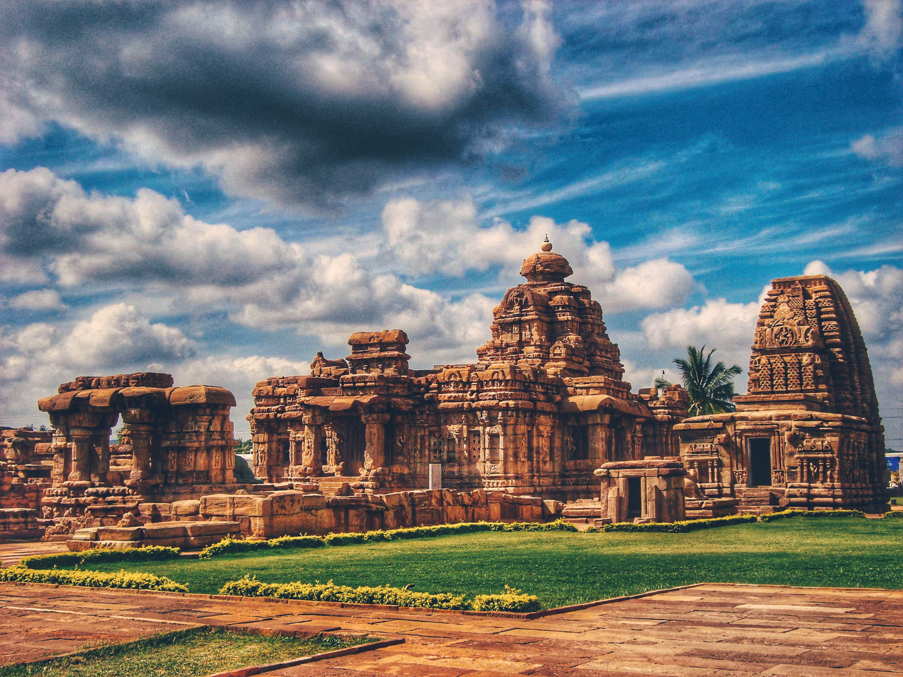
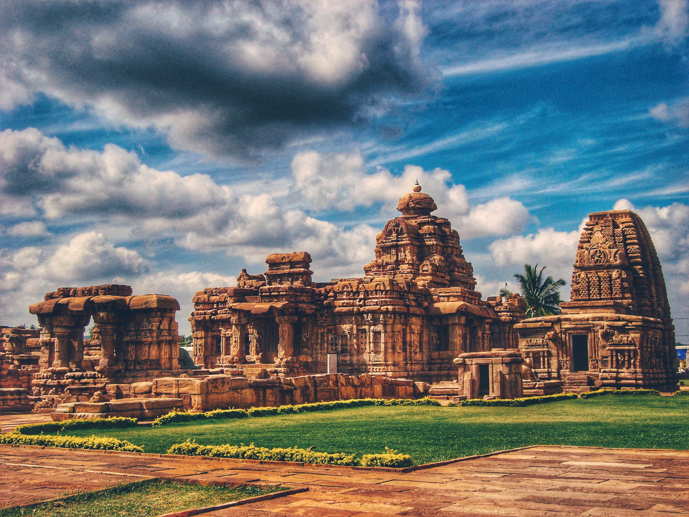

Vedas |
Description |
Key Features |
Image |
Rigveda –
The Book of Hymns |
The Rigveda is the oldest and most revered of the four Vedas, composed in ancient Sanskrit around 1500 BCE or earlier. It consists of 1,028 hymns organized into ten books, known as Mandalas, which praise various deities such as Agni (fire), Indra (thunder), Varuna (cosmic order), and Surya (sun). The Rigveda is a profound spiritual and philosophical work that explores cosmic order (Rita), creation, and existence. It emphasizes the power of divine forces, the significance of rituals, and the pursuit of knowledge. |
- Hymns in praise of gods like Indra, Agni, and Varuna.
- Philosophical questions about creation (Nasadiya Sukta).
- Mantras for rituals, prayers, and meditation.
- Significance: Basis for Hindu philosophies and traditions.
|
 |
Yajurveda –
The Book of Rituals |
The Yajurveda is primarily focused on rituals, ceremonies, and sacrificial practices. It provides detailed instructions for performing Vedic rituals and yajnas (sacrificial offerings). Divided into two versions: Krishna (Black) Yajurveda and Shukla (White) Yajurveda, it is essential for priests conducting sacred rites. Beyond rituals, it also contains philosophical teachings on dharma (righteousness) and the human-divine connection. |
- Two versions: Shukla Yajurveda & Krishna Yajurveda.
- Contains prose and poetic verses for rituals.
- Emphasizes correct pronunciation of mantras.
- Significance: Essential for Hindu ceremonies like fire sacrifices and temple rituals.
|
 |
Samaveda –
The Book of Melodies |
The Samaveda is the Veda of melodies and chants, forming the foundation of Indian classical music and devotional singing. It consists of hymns from the Rigveda but emphasizes musical recitation over meaning. Structured with specific tunes and rhythms, it plays a key role in Vedic ceremonies. The Samaveda represents the power of sound (Nada Brahman), connecting the human soul with the divine through sacred vibrations. |
- Contains 1,875 verses arranged for singing.
- Used by Udgatar priests in rituals.
- Emphasizes rhythm and melody.
- Significance: Foundation of Indian music, influencing devotional singing and classical ragas.
|
 |
Atharvaveda –
The Book of Spells and Healing |
The Atharvaveda is distinct from the other Vedas, focusing on practical knowledge, spells, and mystical practices. It contains hymns, charms, and incantations for protection, health, longevity, and social harmony. Covering topics like medicine, ethics, governance, and metaphysics, it is considered the foundation of Ayurveda and ancient Hindu wisdom. |
- Hymns, spells, and incantations for protection and health.
- Covers medicine, healing, and social ethics.
- Prayers for success in life and warfare.
- Significance: Basis of Ayurveda and Vedic knowledge on well-being.
|
 |
.png)
 
